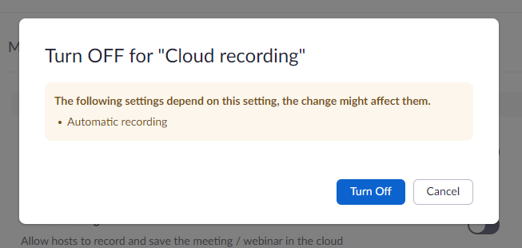
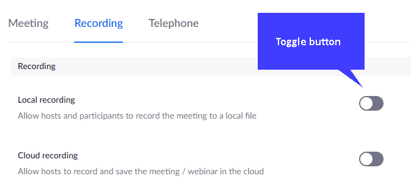

Set up Zoom to use local recordings
Set up Zoom to use local recordings 
Part 2 - Adjust local Zoom settings
Bring up the Zoom application on your PC/tablet.

Sign in with the same credentials.
Click the settings icon at the top right of the window.
Click the Recording option in the left hand menu.
Choose a location for saving files.

Make sure 'Record video during screen sharing' is selected.

EYou can choose to add a time stamp to the video.

Close by using the X in the top right of the pop-up window.